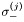
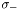

MBO is a library for the efficient numerical treatment of quantum mechanical many body operators. Quantum mechanical many body operators are linear operators constructed from small matrices (single body operators) that are embedded into a tensor product space. For example, in a system of spin 1/2 systems we have the operator , the spin lowering operator for particle . Mathematically, is obtained from the single particle two by two matrix, , by taking Kronecker products with identity operators for particle other than particle .
This leads to the three core concepts of MBO:
MBO was designed to deal with these three concepts as efficiently as possible.
 1.6.1
1.6.1